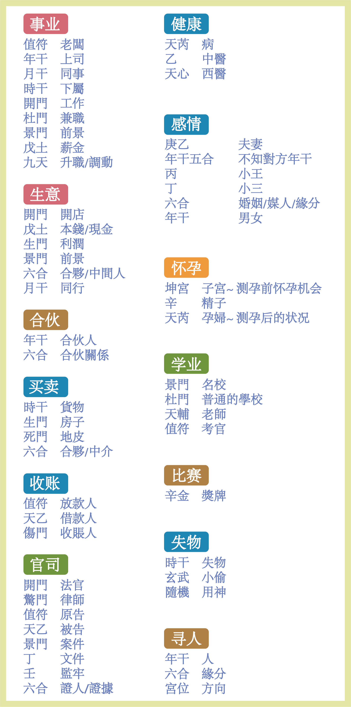

新建出生資料
西曆 (公曆)
拆补起局
阳一局
阳二局
阳三局
阳四局
阳五局
阳六局
阳七局
阳八局
阳九局
阴一局
阴二局
阴三局
阴四局
阴五局
阴六局
阴七局
阴八局
阴九局
农曆
四柱输入 (1906-2026)
時柱
日柱
月柱
年柱
西曆選擇
姓名:
性别:
男
女
存档 + 排盤
设置新命盘
奇門遁甲排盤資料
Import 命盘数据
+ 新群组
奇門遁甲預測
起盤

時
日
月
年
甲
申
庚
庚
戌
辛
甲
戌
己
甲
辰
壬
西曆
時间
格局
八門伏吟，九星伏吟
辰巳 東南
午南
未申 西南
卯東
酉西
寅丑 東北
子北
亥戌 西北
寅 空 马
☯
🧠
🖩
📝
📂
📅
🔄
重命名
刪除
宫位詳解
×